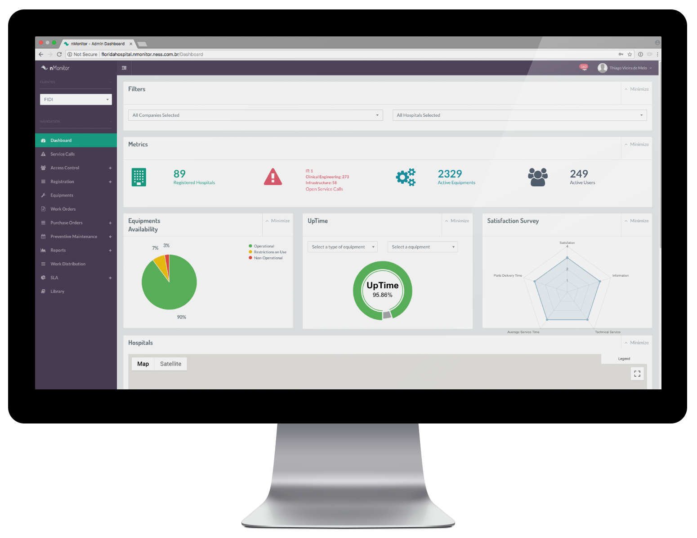
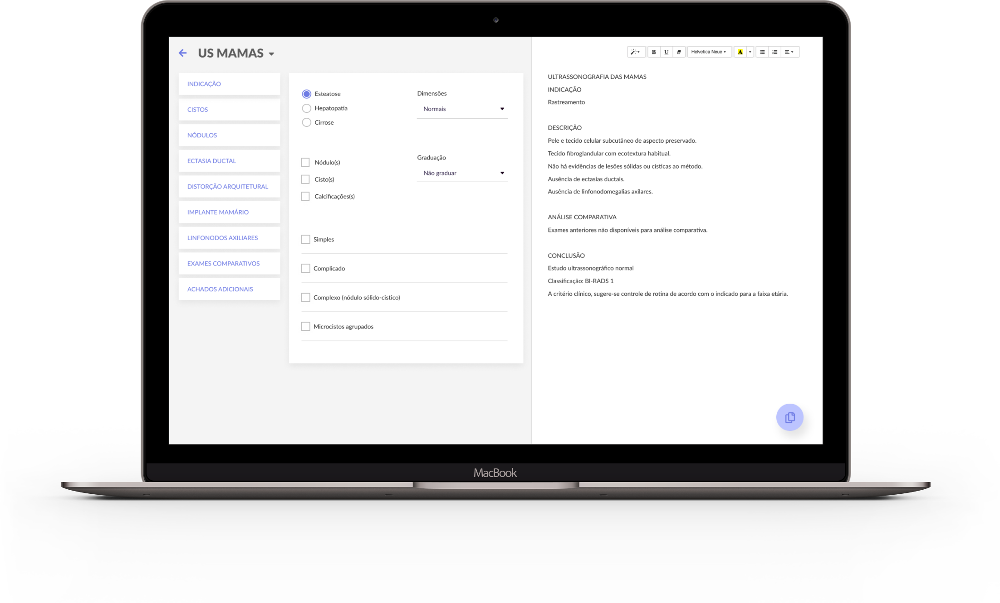
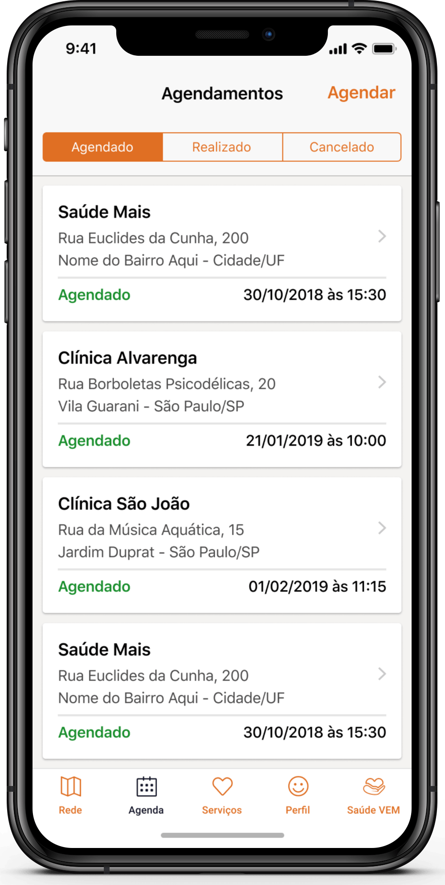

Soluções especializadas para empresas e profissionais que atuam no setor de saúde
Parceria High-tech
Diferenciação via eficiência operacional, valor de produto e canais de comunicação.
Características
- Reestruturação de Processos;
- Desenvolvimento na área de Biomédica e de Radiologia;
- Engenharia Clínica;
- Design e Desenvolvimento de Software;
- Machine Learning e Inteligência Artificial;
- Suporte e Infraestrutura de TI;
- Automação e Robótica;
- Cybersegurança.
nMonitor
O nMonitor é a solução de Software As A Service perfeita para rastrear em tempo real problemas e melhorias com equipamentos e ativos, tudo isso de maneira simples.
A plataforma pode ser acessada via computador e celular, ambos possuem interface amigável pensada exclusivamente para aumentar a produtividade e facilitar o gerenciamento do tempo do usuário.
A plataforma pode ser acessada via computador e celular, ambos possuem interface amigável pensada exclusivamente para aumentar a produtividade e facilitar o gerenciamento do tempo do usuário.
Características
- Otimização na gestão de grandes e diversificados parques tecnológicos.
- Agilidade no controle de perdas.
- Praticidade para monitorar agendamentos de manutenções preventivas.
- Visibilidade das plantas de unidades.
- Evidência de custo do equipamento e previsão.
- Simplicidade na gestão de contratos de fornecedores.
- Escalabilidade com o aplicativo de manutenção.
- Consistência no acordo de nível de serviço (SLA).
- Atualização em tempo real de criticidade.

nCommand
O nCommand é a solução ideal para a expansão de Centros de Diagnóstico com a implementação do comando à distância. Desse modo, a empresa consegue: melhoria de qualidade com a padronização de protocolos; aumento de produtividade com a otimização das agendas; diminuição dos custos com o aumento da performance das equipes; entre outros benefícios.
Características:
- Plataforma única.
- Baseado na web (cloud ou on-premisses).
- MRI e CT
- Várias marcas.
- Suporte a equipamentos desatualizados.
- Streaming de vídeo e áudio em tempo real com o paciente e o operador.
- KPIs do operador.

nReport
Laudos estruturados, promovendo agilidade e qualidade, além de permitir a análise de dados para identificação de padrões em diagnósticos e tendências dos radiologistas.

Laudos estruturados
Formulários inteligentes que se adaptam aos resultados dos laudos e ajudam o Radiologista.
Maior agilidade de workflow
O profissional não precisa digitar todo o texto, a maioria dos campos é resolvida com um clique.
Redução do erro humano
O laudo estruturado permite que o que foi preenchido seja avaliado para saber se houve erro ou esquecimento.
BI para os administradores
Com a analise dos dados, é possível descobrir padrões que devem ser evitados ou incentivados.
nSensor
O nSensor é a solução de monitoramento preciso à distância, que gera dados valiosos através da tecnologia IoT de sensoriamento remoto, obtendo números em tempo real, determinando as variáveis que afetam a vida útil dos seus equipamentos.

Características:
- Plataforma web (IoT) e aplicativo mobile com uso de SSL, login e senha no acesso aos dados.
- Integrado ao nMonitor e à banco de dados com o envio de dados de sensores.
- Permite o acesso simultâneo de diversos usuários sem comprometimento de desempenho e/ou estabilidade.
- Monitoramento e controle de sensores e atuadores em tempo real.
- Dashboards operacionais com alertas visuais e através de e-mails.
- Provê todas as telas do sistema com opção de ajuda.
- Possibilita através de teclas de atalho ou botões configuráveis a navegação no dashboard.
Temperatura
Existe uma correlação direta entre falhas nos equipamentos e variações de temperatura.
Com o monitoramento constante disparamos alertas para sua equipe quando os valores fugirem do esperado.
Umidade
Variações na Umidade são menos percebidas que as de temperatura, mas um nível de umidade equilibrado também é fundamental para a estabilidade da operação dos seus equipamentos.
Hélio
O gás Hélio é um dos ativos mais caros na manutenção dos equipamentos de imagem como TC e RM.
Um vazamento do gás pode significar um prejuízo significativo para sua empresa.
Energia
Micro variações na rede elétrica não são perceptíveis na operação diária. Contudo, causam graves danos aos equipamentos mais sensíveis.
Fumaça
O sensoriamento de fumaça é essencial para garantir a segurança das pessoas envolvidas na operação e também serve para garantir a manutenção das regras da unidade.
Portas
Os sensores de portas possibilitam a criação de regras de automação para prevenção de acidentes, como por exemplo, a aplicação de radiação com a porta aberta.

nAgenda
Solução simples e eficaz para o gerenciamento de agenda. Ele facilita a interação no agendamento para consultas e exames.
Agenda online
Agendamento online através de pedido de agendamento com feedback para o usuário via notificação no aplicativo.
Confirmações
Controle da agenda através de confirmações e cancelamentos dos agendamentos com painel de controle de backoffice.
Sem no-show
Redução do no-show através do pré-pagamento das consultas e exames.
nEcho
Solução para um controle de qualidade e treinamentos eficientes quando o colaborador for realizar Exames de Imagem, otimizando o tempo dos envolvidos no processo. Ele proporciona para a empresa: Praticidade e disponibilidade; Expansão do projeto; Segunda opinião médica; Gestão remota; Produto comercializável, entre outros benefícios.
Streaming do Exame
Monitoramento e análise remota em tempo real do vídeo do exame, sala e áudio em duas vias.
Double Check
Interferência positiva de profissionais para análise do exame e eventual correção de laudos.
Avaliação do Desempenho
Medição de performance com avaliação direta da aquisição da imagem e laudo, com relatórios inteligentes para destacar o desempenho dos colaboradores.
Controle de Qualidade
Controle de qualidade através de checklist para realização estruturada do exame.
nVoice
Solução pioneira na substituição da digitação por reconhecimento de voz de forma acessível. A plataforma de reconhecimento de voz, utilizada hoje principalmente para reconhecimento de voz em Radiologia, também atende perfeitamente outras áreas. Também é uma excelente assistente virtual, o que acelera o processo operacional aumentando a velocidade e qualidade pelo fato de reduzir erros.
Speech to Text
Transformação de fala em texto, com linguagem natural em português e treinada especialmente para termos médicos, permitindo laudos e relatórios muito mais rápidos e precisos.
Assistente Virtual
Identificação do profissional e comandos por voz.
nDoctor
Aplicativo de comunicação específico para profissionais de saúde que lidam com informações sensíveis.
Ele garante um fluxo seguro nas trocas de mensagens e está de acordo com as diretrizes da Lei Geral de Proteção de Dados.
Ele garante um fluxo seguro nas trocas de mensagens e está de acordo com as diretrizes da Lei Geral de Proteção de Dados.
Comunicação Segura
Maior segurança pois garante que as informações serão trocadas dentro de uma arquitetura segura e criptografada, dessa maneira os profissionais de saúde podem se comunicar, tirar dúvidas e debater, com as melhores práticas de segurança.
Agilidade nos Achados Críticos
Velocidade, principalmente para achados críticos, através de mensagens diretas com notificações e mídias ricas (áudios e imagens) garantem a rapidez na comunicação entre times e especialidade inteiras.

Thanks for your message!
Please, fill in required fields.
An error occurred while sending data :(